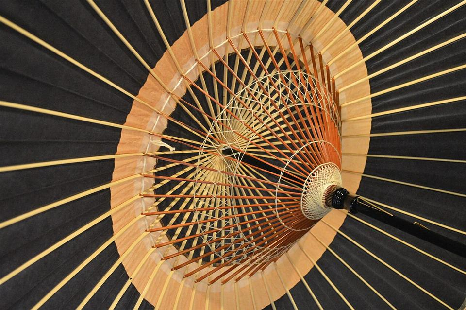

What is it?
Gifu wagasa are umbrellas made from bamboo and Japanese washi paper. Oil made from perilla seeds makes the paper waterproof. (Nippon.com, 2018)
Making one takes about 100 steps, shared between many specialists. (Kogei Japan, n.d.)
History
The Kanō area of Gifu City has made umbrellas since the middle of the 1700s. Strong Mino washi paper was made nearby. (Nippon.com, 2018)
Samurai made umbrellas as extra work, and later townspeople and farmers joined in. The industry was biggest in the early 1900s. (Kogei Japan, n.d.)
Why is it endangered?
Western-style umbrellas became common, so fewer paper ones were needed. The makers grew older and fewer young people joined. Now there are fewer than ten umbrella makers in Gifu. (Kogei Japan, n.d.)
Only a few people are left who can make the bamboo frame. (Nippon.com, 2018)
How you can help
- Visit umbrella shops and exhibitions in Gifu.
- Buy from a Gifu maker, and look after the umbrella. It can get a new paper cover if the frame is still strong. (Nippon.com, 2018)
- Share the story of these umbrellas with others.
Quick facts
- Made in the Kanō area of Gifu City
- Made since the mid-1700s
- About 100 steps for one umbrella
- Fewer than ten makers are left
Sources
- Under the Eye of the Snake: Beautiful, Durable Umbrellas Made of Mino “Washi”, Nippon.com, 2018
- Gifu Japanese Umbrellas, Kogei Japan, n.d.